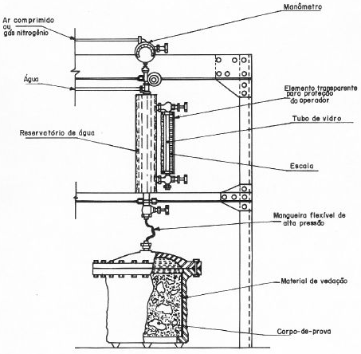

Análise de Patologias
Para a análise de patologias, são sugeridas a realização de diversos testes de acordo com a natureza e o avanço gerado pela degração. Entre estes testes se encontram a verificação de dados levantados, mensuração, análise de amostras, ensaios etc. Sendo que cada componente possui um teste específico para determinar o seu grau de avaliação de perda.
Resistividade
A Resistividade do concreto é considerado um teste base para a avaliação de patologias, uma vez que a principal utilização de estruturas de concretos é a sua alta resistência à compressão. Os testes mais comuns envolvidos com resitência são realizados conforme a NBR 5739 através da compressão em prensas. Mas por ocasião de nem sempre ser possível a retirada de partes do concreto para análise laboratórial, são utilizados outras maneiras para obter informações de estruturas, os quais derivam de ensaios do tipo não-destrutivo no concreto.
Os ensaios não-destrutivos são mais utilizados quando existirem casos de condições próprias dentro de uma edificação. Sendo bem visualizados por trazerem danos ínfimos, com relativa fácilidade e rápidez nas coletas. Podendo se destacar pela análise prévia de causas mesmo no início da obra. Entre estes ensaios, destacam-se:
- Esclerometria
- Energia de Percusão de 30N.m: Indicado para obras grandes com maiores volumes de concreto, até pistas protendidas de aeroportos.
- Energia de Percusão de 2,25N.m: Casos normais de construções até pontes e prédios.
- Energia de Percusão de 0,90N.m: Utilizado nos casos de concreto de baixa resitência.
- Energia de Percusão de 0,75N.m: Uso em peças de concreto com pequenas dimensões, que apresentam sensibilidade a choques mecânicos.
- Ultrassom
- Resistividade Elétrica
- Ensaio de Resistência à Penetração
- Ensaio de Resistência ao Arrancamento
- CAPO-TEST (Teste de Fratura Interna)
Um torquímetro é utilizado para medir a carga necessária para a extrassão de um parafuso com luva de expanssão, que se dilata a medida em que a carga é aplicada.
- LOK_TEST
Mais utilizado em paises como EUA e Canadá, onde o esforço é aplicado por meio de umacaco hidráulico e medido com um dinamômetro, sendo que a peça extraida do concreto apresenta cum cabeçote embutido na extremidade. Normatizado pela ASTM C 900 Pullout Strength of Hardened Concrete.
- Ensaio de Permeabilidade à Água
- Determinação da penetração de água sob pressão [NBR 10787],
- Determinação do coeficiente de permeabilidade à água [NBR 10786],
- Determinação da absorção de água por absorção [NBR 0778], e
- Determinação da absorção de água por capilaridade [NBR 9779].
- Ensaio de Potencial de Corrosão
Esclerometria
A Esclerometria trata-se de um ensaio que mensura a dureza superficial do concreto considerando inicialmente que o material (concreto endurecido) possui uma relação entre a resistência ao choque (dureza) e a resistência à compressão.
A Esclerometria se destaca como um dos métodos mais bem utilizadas para a homogeneidade do concreto, e está explanada na NBR 7882/82. E o aparelho utilizado por este método é o Esclerômetro ou Martelo de Schmidt.
O teste com o Esclerômetro se dá através do mecanisco de molas interno ao aparelho que através de um potencial elástico dispara um impacto através de uma haste contra uma superfície. Sabendo a quantidade de energia já calculada na liberação das molas, o aparelho registra a energia que retorna a ele mesmo e estima a quantidade absorvida pela superfície. Aferindo, dessa forma, o índice de reflexão da superfície.
Os tipos de Esclerômetros utilizados dependerão das características do concreto a ser observado e também do gru de precisão desejado no ensaio. Destacando-se quatro tipos cujas variantes se encontram na energia de impacto:
A metodologia empregada para o ensaio com o Esclerômetro inicia com a escolha de uma superfície aproximadamente plana, sem qualquer rugosidade ou saliencias, nem umidade ou carbonatação evidente. Com a finalidade de se obterem resultados homogênios. Depois é localizada a área do ensaio, onde inicialmente é preparada a região retirando uma parcela pequena da superfície com movimentos circulares de um disco de carborundum e removida a poeira à seco. A norma estabelece que a área deve estar afatada de regiões com segregação, exsudação, juntas de concretagem entre outros; permanecendo a uma distância mínima de 50mm das arestas e cantos de paredes. E a ocupação de cada região deve ser entre 40000 mm^2 e 80000mm^2.
As peças com maiores volumes de concreto devem ser avaliadas pelo menos duas vezes, em faces opostas. Depois de definida a área de análise, constroi-se graficamente um reticulado uniformemente distribuido e identificados. A distância mínima entre os centros de dois pontos de impacto deve ser de 30 mm. Logo após são realizados os impactos e verificado o grau de dureza da superfície na microrregião, tendo que em cada área de ensaio devem ser realizados no mínimo 9 impactos e no máximo 16, não podendo ser realizado mais de um impacto sobre um mesmo ponto.
Alguns fatores podem influenciar diretamente nos resultados da Esclerometria, entre eles se encontram materiais utilizados para a construção do próprio concreto, como os tipos de agregados utilizados entre outros fatores que também colaboram como a espessura carbonatada, saturação, danos interfaciais e superficiais, tipos de cimento e as condições de cura.
Ultrassom
O ensaio de Ultrassom é utilizado para obter informações sobre a homogeneidade do concreto (qualidade e iniformidade), detectando falhas resultantes de segregação (nichos e vazios internos) e também a profundidade de fissuras. Com o ultrassom é possivel obter mais detalhadamente as condições inerentes nas peças o que possibilita a prevenção de rupturas, o que viabiliza a segurança da estrutura e das pessoas que se utilizam dela.
Com a utilização do ultrassom é possivel estimar a resistência à compressão e as ações de ambientes com alta agressividade.
O aparelho de Ultrassom funciona a base de um gerador e transmissor (transdutor piezoelétrico), propagando pulsos no concreto que são analisados a medida em que as ondas (normalmente acima de 20KHz) são transmitidas e recebidas.
O uso do Ultrassom é especificado na NBR 8802/94, onde são levantados informações de aplicação. Essemétodo tem como parâmetro de medição a velocidade da onda na estrutura, possuindo vantagem quanto à velocidade da realização, com custo moderado, porém com dificuldades na aderência dos transmissor e receptor nas superfícies da estrutura.
Resistividade Elétrica
A Resistividade elétrica pode ser definida como a resistência que determinado material exerce perante a passagem de uma corrente elétrica (fluxo de elétrons). A resistividade elétrica tem sua importância entre os testes de patologia porque ela influencia na capacidade de infiltração de agentes externos na matriz de poros do concreto.
A Resistividade Elétrica também é um dos parâmetros a serem analisados na corrosão das armaduras. Observando-se que obras de concreto com alta resistividade tem baixas possibilidades de desenvolverem corrosão, a resistividade elétrica do concreto permite a extração de informações sobre o acesso de ânion Cloreto (Cl- e CO2) que desencadeiam corrosão. O ensaio também se destaca pela facilidade, rapidez e pouco custo, entretanto não existe ainda norma brasileira a ser seguida sobrevalecendo a norma espanhola UNE 83988-2(2002).
A metodologia aplicada para verificação da resistência elétrica se dá através do método de Wenner, onde um aparelho usa quatro eletrodos de corrente elétrica internos e externos, equidistantes com cerca de 5cm entre seu anterior.
Ao final dos testes são observados os resultados e comparados com a seguinte tabela para identificação do risco de corrosão. [A unidade de medida da resistividade nestes casos é composta com a distância assumindo Ohm-cm]
Resistência à Compressão
O ensaio de Resistência à Penetração, também conhecido como Ensaio da Agulha de Windsor, Ensaio do Penetrômetro de Windsor e Ensaio da Pistola de Windsor, é um ensaio desenvolvido em meados dos anos 60, nos EUA, que relaciona a resistência à compressão do comcreto com a profundidade de penetração de um pino especificamente calculado.
O mecanismo do teste baseia-se em uma pistola que dispara um pino metálico contra o concreto. O pino penetra o concreto tendo sua energia cinética total absorvida tanto pelo atrito entre o concreto e o pino e em parte pelo esmagamento e a fissuração do concreto. Com a fratura é gerado um cone que foi o responsável pela maior parte da energia cinética inicial. E a fratura causada pelo impacto intercala até uma porcentagem da matriz de argamassa e agregado graúdo.
Este teste não existe na norma brasileira, sendo importado da ASTM C803 e BS 1881, e adaptado pelo engenheiro Pontes Vieira, 1978. O teste também apresenta facilidade na execulção, rapidez e pode ser estendido para madeiras; porém é mais caro do que o de Esclerometria.
Resistência à Compressão
Este ensaio tem como fundamentação descobrir a carga que é necessária para a extração de uma peça metálica inserida dentro no concreto. Para esse teste exixte uma variedade de equipamentos, destacando dois mais utilizados:
Permeabilidade à Água
Este ensaio, diferente dos demais, é realizado em ambiente controlado e tem como principal objetivo conseguir informações relativas à permeabilização do concreto. Ele é composto de quatro testes fundamentais:
Na metodologia empregada no teste de penetração de água é pego uma amostra de concreto que recebe água pressurizada que variam de 0,1MPa, 0,3MPa e 0,7MPa en diferentes intervalos de tempo. Após, sendo retirada, a amostra é rompida e é medida a profundidade máxima que a água penetrou na amostra. Neste procedimento a água não pode percolar nem sair pelas laterais, caso ocorra será necessário interromper o procedimento.
Nos demais teste são levantados dados através da velocidade de percolação da água no concreto de acordo com as vazões de entrada e saída. E as informações sobre os coeficientes de permeabilidade, absorção, índice de vazios e as massas seca e saturada, são obtidas posteriormente através das fórmulas explanadas na norma.
Potencial de Corrosão
O ensaio de Potencial de Corrosão é um dos testes com diferentes métodos de realização, sendo a técnica eletroquímica a mais utilizada, contudo um dos ensaios mais utilizados para monitorar e avaliar o comportamento das estruturas de concreto armado com relação à corrosão da armadura.
O ensaio leva em conta o conceito de Potencial Eletroquímico que determinará a facilidade de transferência de cargas entre o aço e a solução contida nos poros do concreto. As avaliações são locais (in loco) é definida na norma americana ASTM C876-09
A metodologia diz necessária duas conexões no concreto armado com a utilização de um voltímetro para cálculo da diferença de potencial, sendo que um eletrodo funcionará em contato com a armadura metálica (quando sendo necessária uma perfuração ou somente contato quando a armadura estiver exposta) e o outro eletrodo de referência faz contato parcial com a superfície.
As peças de concreto que apresentarem maior resistividade elétrica possuirão menor probabilidade de sofrerem corrosão, assim como no ensaio de resistência elétrica superficial. Os devios obtidos pelos voltímetros são consideráveis para cálculo até 0,2V e 0,3V
Teste de Carbonatação
É sabido que o concreto possui um potencial hidrogeniônico alcalino (PH entre 11 e 13), sendo que este mesmo funciona como uma segunda camada de proteção para a armadura metálica no seu interior. Não obstante, as reações que podem ocorrer por difusão e migração iônica despassivam o filme protetor que é comum dos vergalhões o que acarreta a oxidação do metal e consequentemente deixa a estrutura de concreto com perda das características de compressão.
O Teste de Carbonatação entra nesse estágio como um avaliador do concreto, se utilizando de indicadores ácido-base para concluir dados relativos ao avanço das reações e ambiente degradador. A carbonatação no concreto é resultado de reações de CO2 e H2O que reagem na superfície e atacam com os íons livre no interior, fazendo que o PH normal do concreto recair, tornando menos básico onde for mais atacado e mais sussetível à fissuras e corrosão.
A metodologia requer que uma solução de um dos indicadores (1g de fenoftaleina + 49g de álcool + 50g de água ou 1g de timolftaleína + 99g de água). Inicialmente, faz-se uma abertura no concreto até expor a armadura , aplicando, depois, em forma de spray a solução e se aguarda cerca de 15 minutos fazendo a leitura da profundidade de carbonatação da estrutura